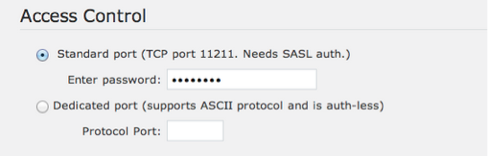
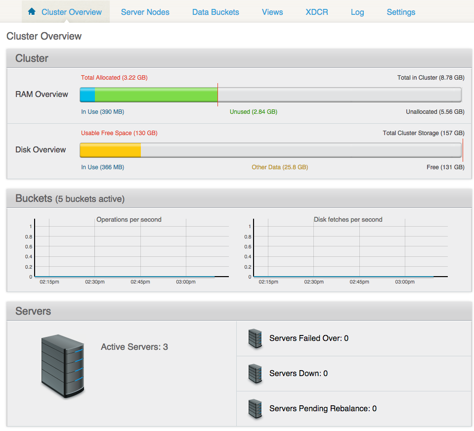
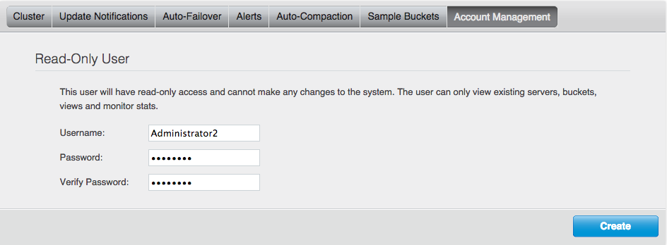

Security inside Couchbase Server
Best security practices inside the Couchbase Server cover passwords, bucket authentication, read-only administrators, access logs, and encrypted administrative access.
Couchbase passwords
Couchbase Server has several passwords:
- Administrative password
- Bucket password
- XDCR remote cluster password
Requirement for strong passwords means that all passwords must comply with the following:
- Length of a password must be at least 7 characters, consisting of letters (upper and lower case), digits, and special characters.
- Rotation of passwords must be enforced based on organization's requirements.
- Forgotten administrative passwords are reset using the cbreset_password tool.
Bucket authentication through SSL
To enforce bucket security, make sure to provide for bucket authentication through SASL (Simple Authentication and Security Layer).Authentication on the bucket level takes place over the CRAM-MD5 protocol and involves a single challenge-and-response cycle initiated by Couchbase Server. In the challenge sequence, the server sends a string in the format of a Message ID (email header value including angle brackets), which includes an arbitrary string of random digits, a timestamp, and the server's fully qualified domain name.
Access control is configured using the Couchbase Web Console and is set for two ports:
- Standard port
- This is TCP port 11211, which requires SASL authentication. Enter the password that complies with the best practices rules.
- Dedicated port
- This port supports ASCII protocol and doesn't need authentication. You only need to enter the port number.

Removal of unprotected buckets
To safeguard security in the production phase, buckets that have been created by Couchbase Server as a part of the installation process must be deleted. This applies to:- Default bucket, which has no password support.
- Any sample buckets that have been supplied with empty passwords.
Encrypted administrative access
A new port for encrypted administrative access was provided in release 3.0 and is useful for administrators who administer Couchbase Server over the Internet.
In case you want to force an SSL connection to the Couchbase cluster, you have to lock the non-SSL ports.
While an administrative console is typically protected via an HTTPS connection, the new administrative access on port 18091 allows connection to the Couchbase Web Console over SSL, which is enabled by default. To talk over SSL to the Couchbase Web Console, connect to the following URL with your web browser: https://couchbase_server:18091
The Cluster Overview screen is displayed, from where you can access other cluster information such as server nodes, data buckets, views, and so on.

The Settings tab shows that a self-signed SSL certificate has been deployed across the cluster. This certificate can be regenerated, or replaced.
Read-only administrative users
A read-only administrator can view certain activities without having ability to edit. Privileges and credentials for this user can be set in the UI.
Passwords for the read-only administrators follow the same requirements as for other Couchbase passwords: they must be strong and rotated periodically.
To set up the credentials for a read-only administrator using the Couchbase Web Console, go to and enter the administrator's username and password.

Access logs
Access logs are used to monitor the administrator's access to the Couchbase cluster. These logs:
- Track REST or the Couchbase Web Console's accesses and can be found in the file /opt/couchbase/var/lib/couchbase/logs/http_access.log.
- Are ASCII text based, which is a common log format.
- Allow you to retrieve the following information:
- Client IP patterns
- Error codes, such as 401
- Suspicious URLs
You can use an access log along with OS auditing on your server. While the OS log shows who logged in, the access log shows whether an administrator who logged in actually connected to Couchbase Server or failed to connect.